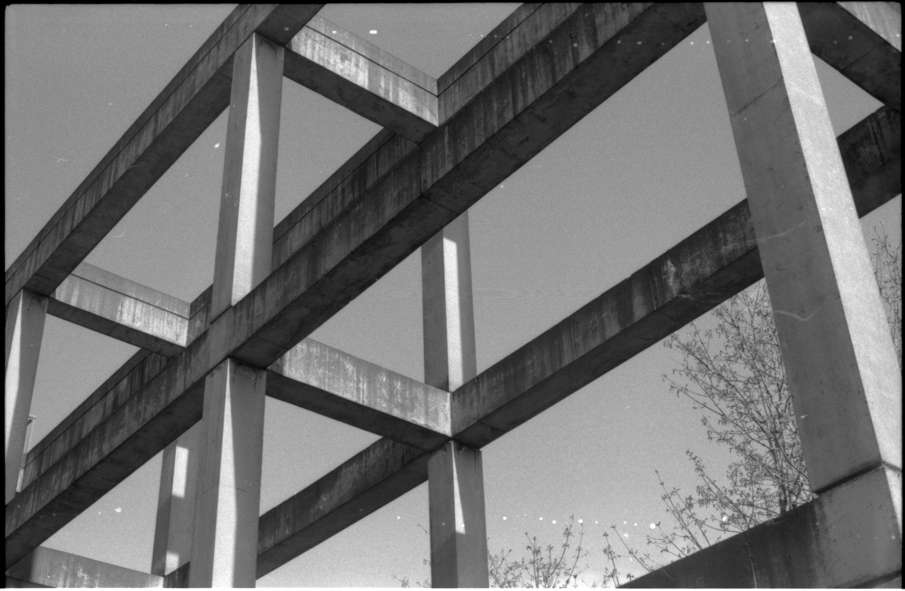
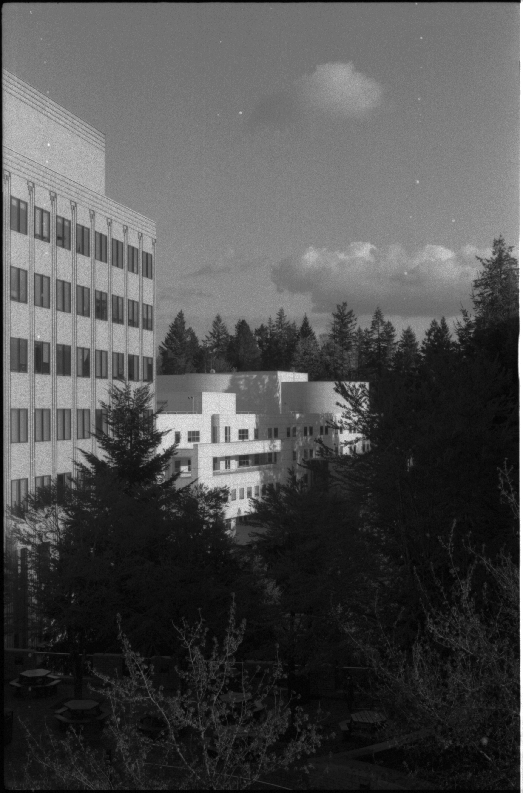
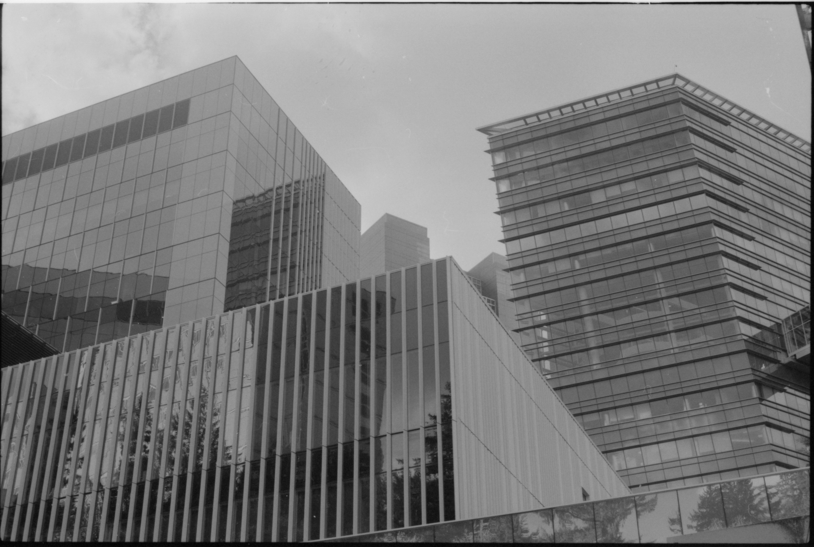
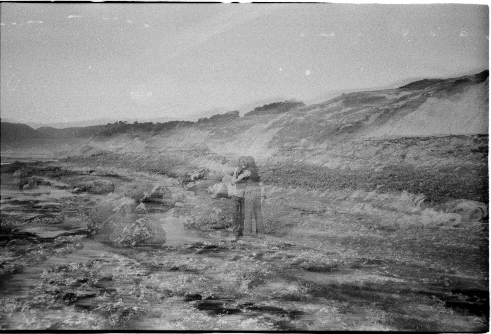
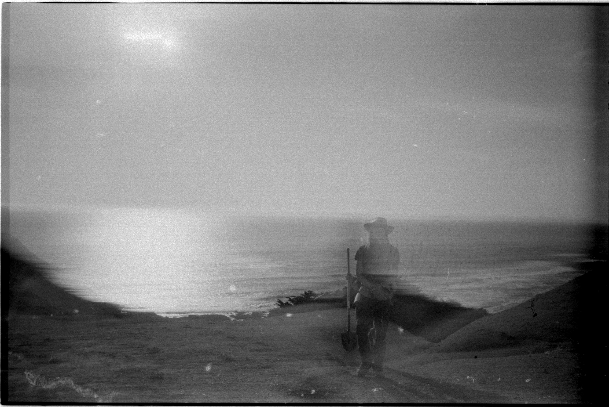
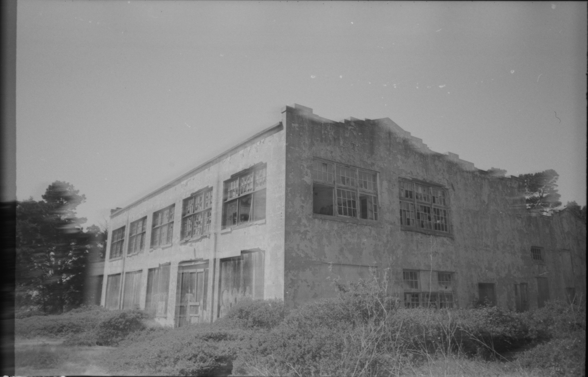
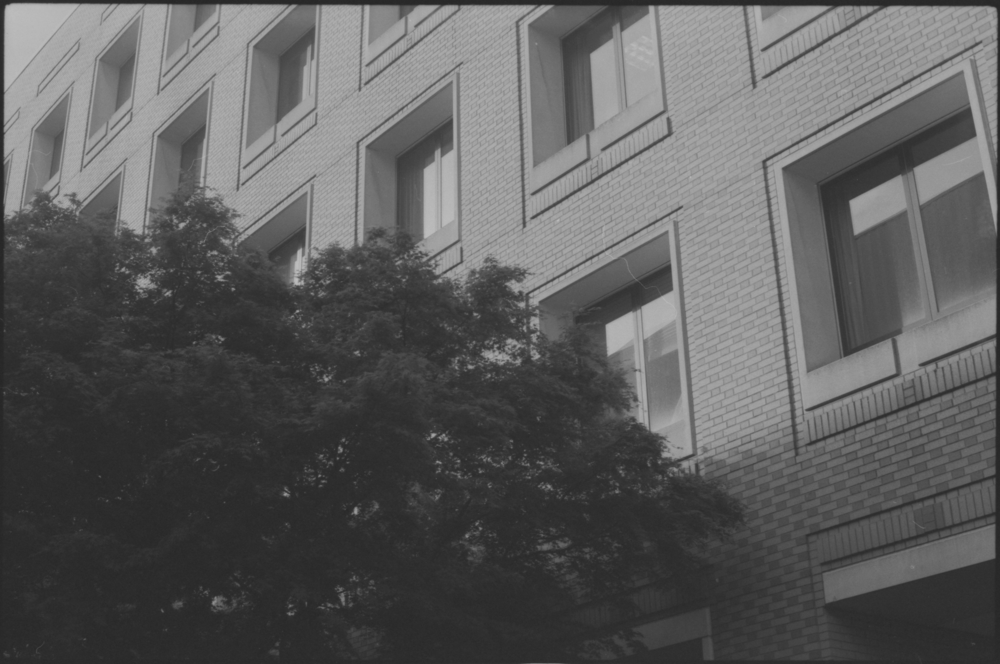
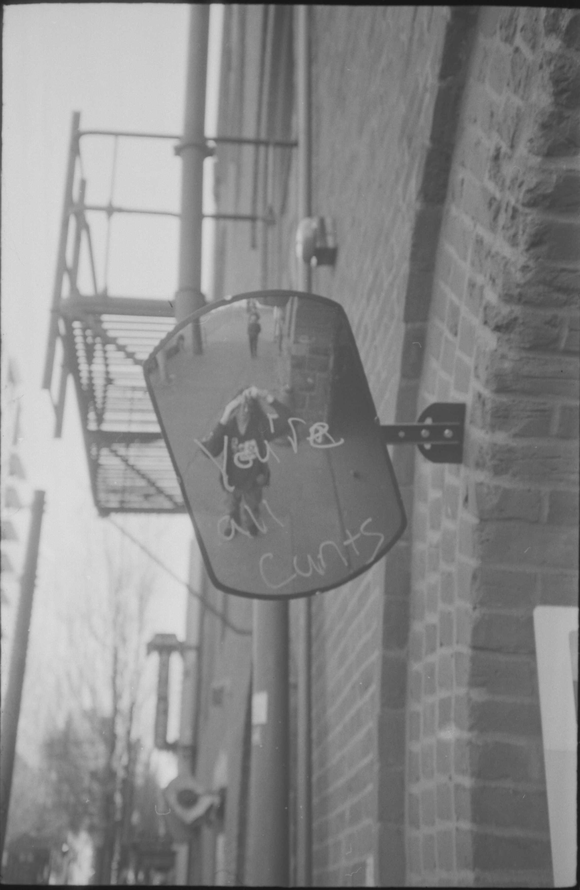
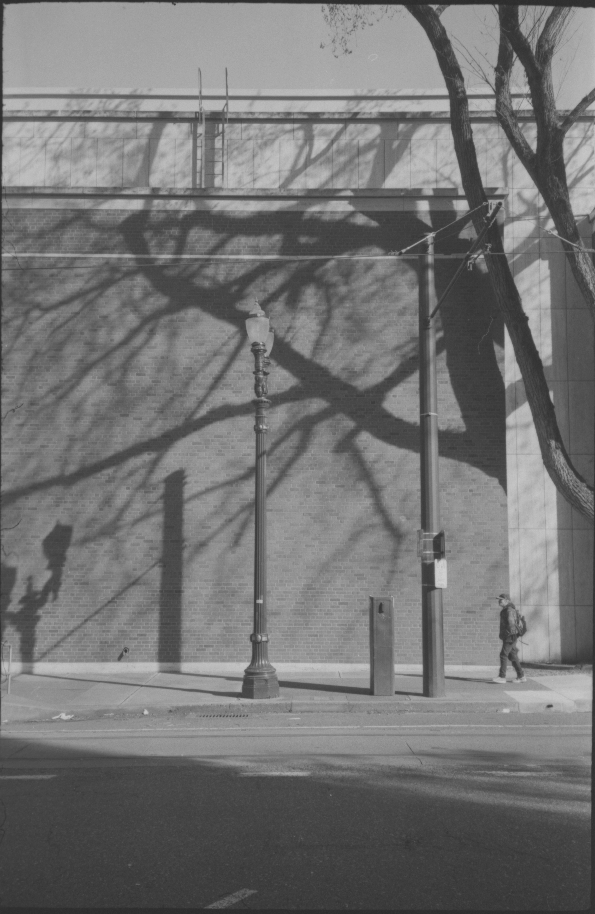
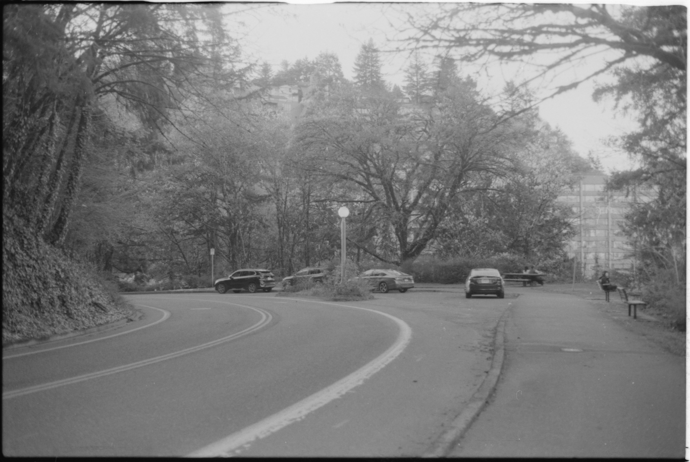

here are my favorite photos from 4/19/26
these first three were taken at OHSU in portland, they have some weird and fun architecture there



these next three were taken at the historic KPH marine radio station in point reyes CA, and at the beach just behind it. The camera I was using to take these pictures (a minolta freedom dual) had an interesting malfuntion, and produced some weird blurry photos and accidental double exposures. I'm not sure what was wrong with the camera, but once I adjusted the scans for overexposure, they ended up being some of my favorite photos I've ever taken.



these last four were taken in various areas of western portland OR, downtown. I love looking around the city for interesting compositions and cool lighting.



